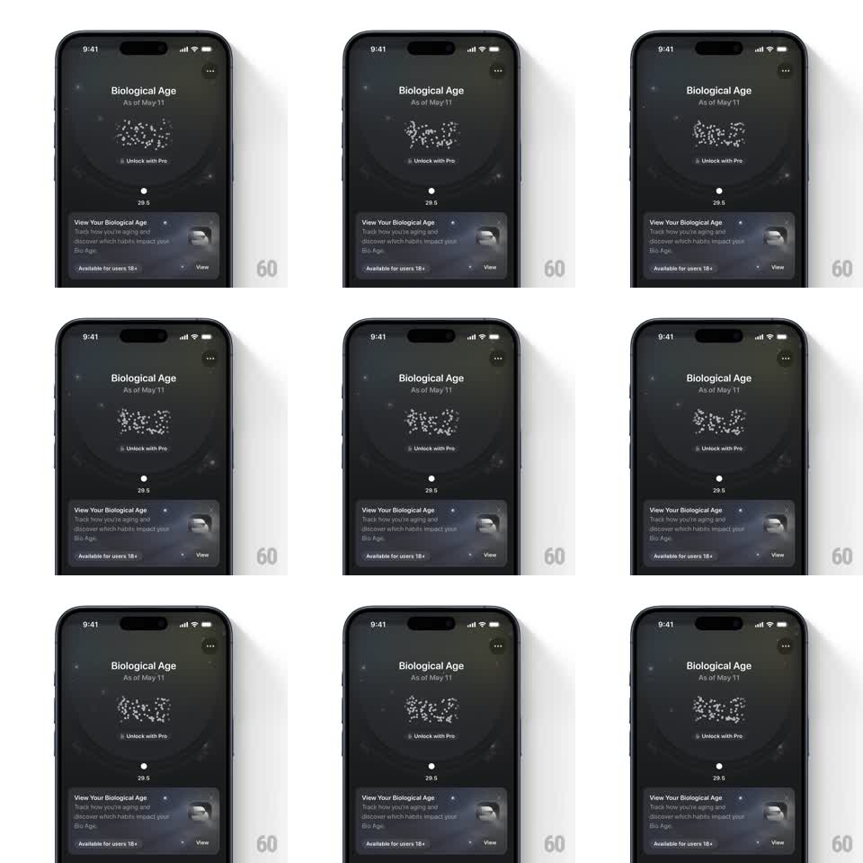

Media
Frame-by-frame

Rebuild this animation 1:1: Bevel's locked biological age - a lock silhouette formed from scattered white dots drifts and pulses continuously on the dark premium screen above the Unlock with Pro pill and the teaser card below.

Rebuild this animation 1:1: Bevel's locked biological age - a lock silhouette formed from scattered white dots drifts and pulses continuously on the dark premium screen above the Unlock with Pro pill and the teaser card below.
## Integration
Integration: stack-agnostic spec - springs given as stiffness/damping, timed motions as duration + curve; map every value to your framework and animation library of choice.
## Scene
Dark screen: "Biological Age" title with "As of May 11" subline, center stage a lock formed entirely of dots on a faint radial backdrop, an "Unlock with Pro" pill with lock glyph under it, the value "29.5" dimmed below, and a frosted teaser card ("View Your Biological Age") at the bottom.
## Motion spec
Pattern: ambient particle drift on a dot-matrix lock.
- ~80-120 dots hold the lock's silhouette but each wanders on a slow noise path (+/- 12px, 4-8s loops, phase-offset per dot) so the form shimmers without dissolving.
- Global pulse: the whole dot field breathes (scale 0.96 -> 1.04, 4s, ease-in-out) and dot opacity ripples outward from the lock's center (0.5 -> 1, staggered by distance).
- Occasional single dots flare brighter and settle (random every 1-2s).
- Title, pill, value, and card stay static; the dot field is the only motion.
## Calibration
- The lock must always read as a lock - dots drift around their home positions, never free-floating.
- Motion is calm and premium: slow, low amplitude, no sharp moves.
## Reduced motion
Dots hold their positions with a gentle opacity shimmer (4s cycle).
## Don't miss
- The dot density defines the lock's edges - sparse in the shackle's negative space, dense at the body.
- The radial backdrop gradient pulses in sync with the field's breath.